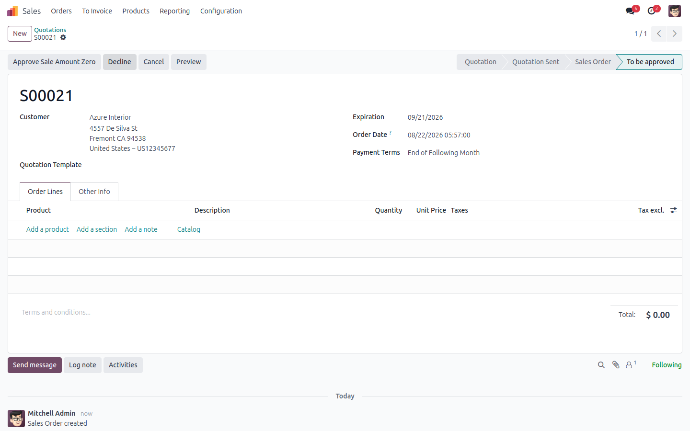
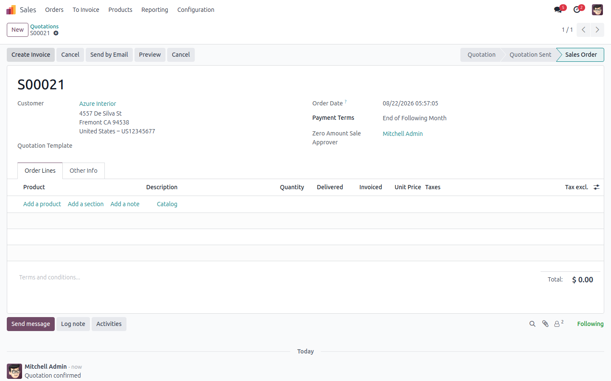

| Blocks $0 confirmations | Dedicated approval state | Approver tracked on the order | Odoo 17 |
A quote with no order lines, a 100% discount, or a pricing mistake can slip through and get confirmed at $0.00. This module catches it at the moment of confirmation and routes it to a manager instead.
🛑 Confirmation gateIf a quotation's total is exactly $0.00, clicking "Confirm" no longer confirms the order - it moves it to a "To be approved" state instead. |
🔒 Restricted approval groupOnly users in the "Zero Amount Sales Validator" group see the Approve/Decline/Cancel buttons on a pending order. |
✅ One-click approvalThe approver clicks "Approve Sale Amount Zero" and the order confirms normally, exactly like a regular sale order from that point on. |
📋 Approver on recordThe approving user is stamped on the order (Zero Amount Sale Approver field) for a clear audit trail. |
| 1 | Salesperson confirms a $0.00 quotation Instead of becoming a Sales Order, it moves to "To be approved" and the normal Confirm button disappears. |
| 2 | A validator reviews it Anyone in the Zero Amount Sales Validator group can Approve, Decline (send back to draft) or Cancel it from that same screen. |
| 3 | Approved orders confirm normally Once approved, the order becomes a real Sales Order and the approver's name stays on the record. |
|
 Confirming a $0.00 quote routes it to "To be approved" instead of confirming it |
 After approval the order confirms normally and the approver is on record |
| ✓ | No accidental $0.00 sales orders. Pricing mistakes and empty quotes get caught before they become confirmed orders. |
| ✓ | Lightweight. One small model extension and one view, no extra menus or settings screens to learn. |
| ✓ | Group-controlled. You decide exactly who can approve, using a standard Odoo security group. |
| Odoo version | 17.0 (Community or Enterprise) |
| Dependencies | Sales (sale) |
| Interface language | English |
Does this block every sale order, or just $0.00 ones?
Only orders whose total is exactly $0.00. Any order with a positive total confirms exactly as it does in stock Odoo.
Who can approve a pending order?
Any user you add to the "Zero Amount Sales Validator" security group (Settings > Users & Companies > Groups).
Can I still see a short demo of the flow?
Watch the workflow in action.
ACH Alchemical Code
Questions before you buy, or need support after installing?
Contact us: mikealquimia@gmail.com